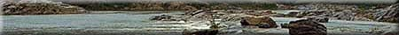
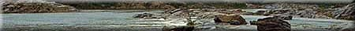

| Geological exploration has been a part of Saskatchewan's heritage for over one hundred years. Today, there are many mines in operation in Saskatchewan, producing everything from gold to coal. From these minerals, raw materials for the manufacturing, construction and chemical industries are developed. The majority of materials required for our energy needs also come from the ground.
Examples of some of the products of the mining industry are:
Mineral Claims/Ownership Just how are the minerals that produce these products claimed? The company must be assured of some benefits from their mine-finding efforts. Canada has laws regulating mineral affairs, and the laws vary from one province to another. In general, the intent of all provincial legislation affecting mineral resources is:
At one time, mineral rights were not recognized as separate and apart from surface rights, and the issue of a land grant meant that the land and the minerals under it were disposed of by the Crown. In Saskatchewan, ownership of mineral rights held by the federal Crown since 1870 were transferred to the province in 1930. Approximately 62.4 million acres in the surveyed area are under the jurisdiction of the province. Over the years, various transfers of Crown mineral rights have resulted in freehold mineral ownership which is confined to the remaining 24 percent of the area surveyed (areas in the southern half of the province). These mineral rights are held by individuals, companies and corporations. Prior to October, 1930, the disposition if Crown minerals in Saskatchewan was under the jurisdiction of the federal government, and exploration and development were controlled by federal legislation. Following the transfer of natural resources to provincial control, the province implemented a Mineral Resources Act under which a series of mineral-specific regulations were formulated to govern disposition and exploration and development of Crown-owned minerals. Exploration and development of minerals are currently governed under the Mineral Resources Act, 1985, which applies to all mineral resources in Saskatchewan, and the Crown Minerals Act, which applies to only Crown-owned minerals. The provincially held mineral rights are administered by Saskatchewan Energy and Mines. Claim-staking in this province, involves obtaining a permit and a lease for the mineral claim. Prospecting and development regulations vary depending on the resource; metallic and precious minerals, industrial minerals and petroleum/natural gas. The Mineral Taxation Act provides a mineral tax to be levied against all owners of mineral rights. An individual is taxed only on the mineral rights owned in excess of 3200 acres. All mineral rights owned by corporations are taxable, with exception of those minerals within the corporate limits of cities, towns and villages and minerals underlying railway right of ways and cemeteries. In addition, an exemption from tax is available to farm corporations which meet certain guidelines.
|